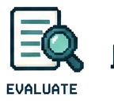
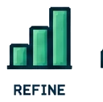

Quality of the answer
Is it relevant, accurate to the approved material, and free from unsupported certainty?
I start with what a learner needs to practice, then ask whether a controlled, variable response would make that practice more useful. My learner-facing AI work is a design direction informed by completed AI and documentation work: define the task, approve the context, set boundaries, test the response, and keep a source or human path open.
When AI earns a place
I use a fixed interaction when the options and feedback can be defined in advance. AI-supported practice becomes worth exploring when variable questions, explanations, or scenario responses change what the learner can practice. The learning behavior, not the novelty of the interface, sets the direction.
Known options and feedback
Branching or scored state
Variable response, defined scope
A deterministic decision demo is not a lesser experience. When its branches cover the learning task, it may be the clearer, more testable choice.
What I design around the model
Before I choose the AI role, I define the objective and the action: practice a decision, compare a rationale, explore a consequence, or ask against approved material. Then I specify the context, instructions, response boundary, feedback, and what happens when the system cannot answer.
Visible to the learner: fictional educational practice; approved context only; no confidential data or professional advice; an SME or source remains the route for real-world decisions.
Portfolio-safe guided scenario concept
A fictional customer cue gives the learner something to investigate. A bounded AI-supported version could vary the response to the learner’s question, while a defined reflection asks them to interpret the signal and choose a next action. The tabs below show one scripted exchange unfolding, not live AI or a production deployment.
Possible bounded variation: choose approved customer context and a discovery constraint, invite the learner’s question, then ask them to compare the response with the evidence and explain their next move. Scenario parameters create useful variation; a structured reflection keeps the learning visible.
Approved context + visible limits
A source-grounded assistant should answer from selected, human-reviewed learning material and identify what supports its answer. If the question exceeds those materials, it should say so and guide the learner back to the source or an SME, not improvise an authoritative-sounding answer.
Ask where the handoff waits, then what that delay changes for the customer.
Supported by the illustrated guide excerptFictional concept demonstration only. It does not accept user questions, process confidential information, or provide operational advice.
Validation before readiness
My experience evaluating AI output makes me more deliberate about what a learner-facing experience is allowed to say. I would test whether the response is useful for the target practice, accurate against supplied sources, within scope, understandable in the interface, accessible, and safe when evidence is missing.

Is it relevant, accurate to the approved material, and free from unsupported certainty?
Does it help the learner reason, retry, or reflect instead of simply providing an answer?

Are the interface, accessible controls, limits, and failure route clear at the moment of use?
Deterministic practice demo
Choose the response that best moves a discovery conversation forward. This transparent simulation uses a small, predefined feedback library, not live AI. It shows why I would keep a fixed interaction when it already supports the learner’s decision.
Development example

Sanitized development example
It is a contained, public-facing example of a conversational experience: a visitor arrives with a hiring question, gets routed toward relevant evidence, and can choose a direct next step. The design makes the guide’s purpose and limits clear instead of treating it as an all-purpose authority.